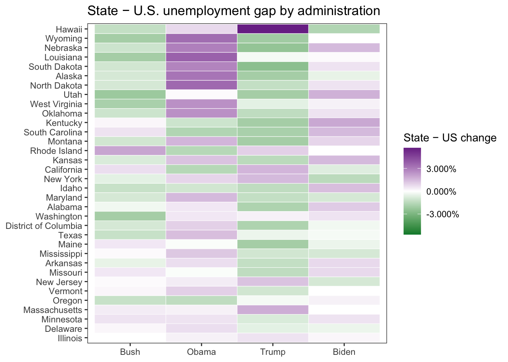
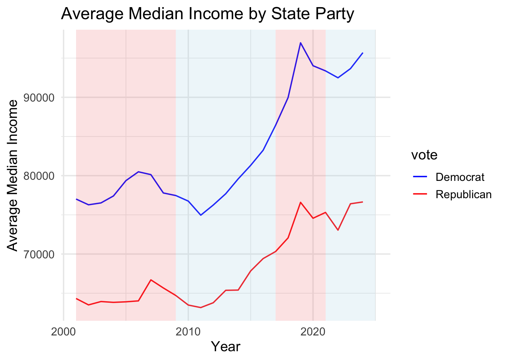
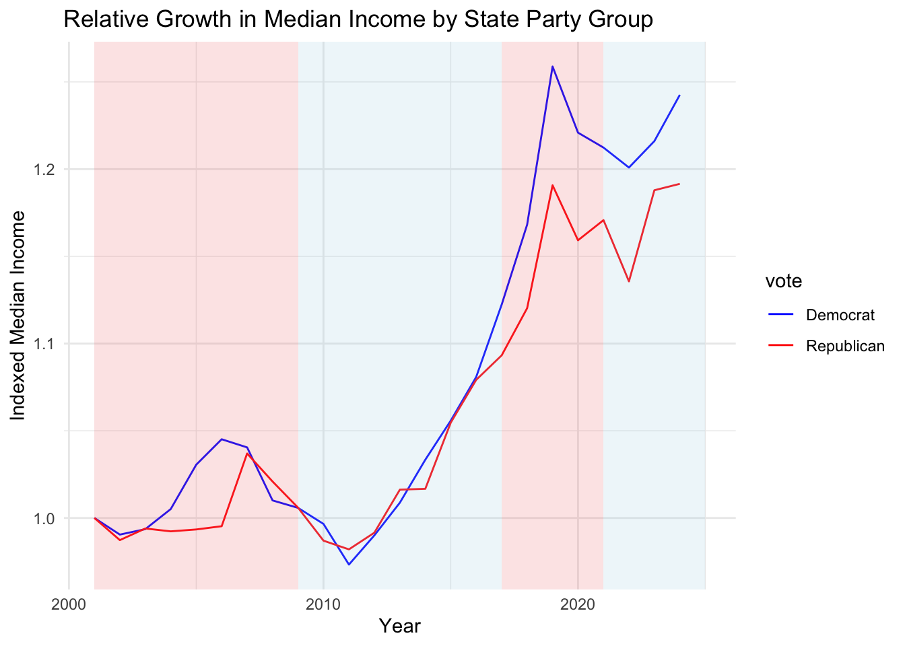

This section summarizes key findings from each dataset, identifying trends across economic variables and safe states. The analysis focuses on each variable individually to identify patterns within and across economic factors.
3.1 Unemployement Rate
The first variable of interest is the Unemployment Rate. To quantify the impact of each presidency, a variable ‘change’ was created. Change is defined as the state’s unemployment rate in the last year the respective president was in office, subtracted from the first year they took office. Naturally, certain states have lower unemployment rates for reasons related to population size, specific industries, or the age of the workforce. To account for these differences, the analysis uses a metric that quantifies the state’s change relative to the overall change in the United States. Each state has a value “Difference from US,” (often referred to as relative unemployment rate change) which is the change in the individual state’s unemployment rate for the respective administration, subtracted by the United States’ change in unemployment rate for the same administration.
First, “Difference from US” was plotted with a Cleveland Dot plot to see if there are overall trends with unemployment rate by state and administration. Recall, a lower unemployment rate is better, so a lower difference from US is better as well.
Code
library(readr)library(ggplot2)library(dplyr)library(tidyverse)library(tidytext)unemployement_us_avg <-read_csv("/Users/avagrey/political-party-impact/data/clean_preprocessed/unemployement_clean.csv")unemployement_us_avg <- unemployement_us_avg |>mutate(administration =factor( administration,levels =c("Bush", "Obama", "Trump", "Biden") )) |>mutate(State_in_panel =reorder_within(State, dif_from_us, administration))unemployement_us_avg |>ggplot(aes(x = dif_from_us, y = State_in_panel, color = Vote)) +geom_point() +facet_wrap(~administration, scales ="free_y") +scale_color_manual(values =c("Republican"="red","Democrat"="blue","United States"="gray" )) +scale_y_reordered() +labs(y ="State", x ="Average Unemployement Rate",title ="Difference from US Change in Unemployement Rate Throughout 21st Century Across Administrations")
Under Obama, Trump, and Biden, there are clear differences in safe red and safe blue state outcomes, depending on the administration and its party. Under Democratic presidents (Obama and Biden), Republican states experience less improvement or an increase in the unemployment rate compared to the US average. In fact, under Democratic administrations, most of the states that perform worse than the US average are Republican-voting states. Similarly, under Trump, the states that perform worse compared to the US average are all Democratic-voting states, many blue dots at the top of Trump’s graph. Additionally, under Obama, Trump, and Biden, safe states seem to experience a larger decrease in the unemployment rate than the US average during their respective administrations, with many red dots at the bottom of Trump’s graph and many blue dots at the bottom of Obama’s and Biden’s. While Bush does not have as strong a pattern, the majority of states that see a greater reduction in the unemployment rate than the US average are Republican states, majority of dots on the bottom half are red.
Also, notably, the ordering of states changes considerably across administrations, even across administrations of the same party. For example, under Trump Hawaii and Massachusetts had the worst relative unemployment rate change, but under Bush Hawaii had the 6th best relative unemployment rate change and Massachusetts was below the top five worst states. So, while there are party specific trends for the ranking of relative unemployment rate, there does not seem to be state specific trends.
It is also helpful to understand this patterns more generally rather than at a state and administration level.
This mosaic plot shows the frequency of states whose unemployment rate changes increase or decrease relative to the US, grouped by the administration’s party and the state’s voting preference. Interestingly, while the Cleveland Dot plot showed that the political party the safe state voted for affected its relative unemployment rate change, the mosaic plot shows a slightly different pattern.
The plot above shows that unemployment in Republican states fluctuates depending on the political party of the administration, while unemployment in Democratic states remains stable. Under Republican presidents, Republican states’ unemployment rates mostly decrease compared to the US average, while under Democratic presidents, they tend to increase This indicates a strong relationship between the administration’s party and the unemployment rate in Republican states. Comparatively, Democratic States experience little to no difference in their unemployment rates, regardless of the administration’s party.
It may be useful to plot unemployment rate changes relative to the U.S. average on a map to identify potential geographic patterns
The plot above communicates that states in the middle of the country have a greater change in relative unemployment rate change across administrations. Specifically, states like Wyoming, Nebraska, Utah, South Dakota, North Dakota, and Kansas have clear positive and negative differences. Under Republican administrations, these states perform better, and under Democratic administrations, they perform worse. While this makes sense because they are Republican-safe states, it is also interesting that they seem to fluctuate more than other safe red states, turning dark green during Republican administrations and dark purple during Democratic administrations.
A heat map showing the standard deviation of unemployment-rate changes relative to the U.S. average further supports this pattern.
Code
state_order <- unemployement_us_avg |>group_by(State) |>summarise(var_gap =sd(dif_from_us, na.rm =TRUE), .groups ="drop") %>%arrange(var_gap) |>pull(State)lim <-max(abs(unemployement_us_avg$dif_from_us), na.rm =TRUE)difference_visual <-ggplot( unemployement_us_avg,aes(x = administration,y =factor(State, levels = state_order), fill = dif_from_us)) +geom_tile(color ="white") +labs(title ="Relative State Unemployment Change by Administration",x =NULL, y =NULL) +scale_fill_gradient2(name ="State − US change",low ="#008837", mid ="white", high ="#7b3294",midpoint =0,limits =c(-lim, lim),labels =label_percent(accuracy =0.001), na.value ="grey90" ) +theme_bw() +theme(panel.grid =element_blank())difference_visual

This heat map reinforces the same idea as the geographical plots; many states in the middle of the country, like Wyoming, Nebraska, South Dakota, North Dakota, and Utah, show the largest unemployment differences across administrations. Besides an outlier like Hawaii, the majority of the top states are Republican (as shown in the mosaic plot) and are located in the middle of the country. Comparatively, many East Coast and coastal states, such as Delaware, Massachusetts, Oregon, Vermont, and New Jersey, have unemployment rates that change very little regardless of the political party in office.
3.2 Median Income
The next variable is Median Household Income. First, it is important to understand median income for state’s in each political party since richer State’s tend to vote Democrat. 1 For this reason, plotting median income by safe-red and safe-blue states can give insight to natural differences. Additionally, observing trends from 2001 and 2024 could provide insights into how those differences evolved over time.
Throughout the 21st century from the beginning to the present, Democratic-voting states have a higher median income than Republican-voting states, which reinforces Dr. Gelman’s book on wealth and voting preferences.1 However, Democratic and Republican states seemed to experience the same relative median income increase from 2001 to 2024, both of their median values increased by a similar amount.
Also, it seems that both Republican and Democratic states exhibit greater variability in 2024 than in 2001. Both box plots in 2024 are longer, with longer whiskers, indicating that the data is more spread out. Specifically, both Democratic and Republican states seem to skew more right in 2024, indicating a potential widening in wealth inequality among both sets of states. Also, these values are adjusted for inflation in current dollars, so while Alaska is an outlier with its median income in 2001, the true value was smaller (still larger than all other states).
Plotting median income by year averaged for each set of states can be helpful to see more granular trends at a year-by-year basis.
Code
median_income <- median_income |>group_by(Year, vote) |>summarise(avg =mean(median_income), .groups ="drop") median_income|>ggplot(aes(x = Year, y = avg, color = vote)) +geom_line() +scale_color_manual(values =c("Republican"="red","Democrat"="blue")) +annotate("rect",xmin =as.Date("2009-01-01"),xmax =as.Date("2016-12-31"),ymin =-Inf, ymax =Inf,fill ="lightblue", alpha =0.2) +annotate("rect",xmin =as.Date("2001-01-01"),xmax =as.Date("2008-12-31"),ymin =-Inf, ymax =Inf,fill ="lightcoral", alpha =0.2) +annotate("rect",xmin =as.Date("2017-01-01"),xmax =as.Date("2020-12-31"),ymin =-Inf, ymax =Inf,fill ="lightcoral", alpha =0.2) +annotate("rect",xmin =as.Date("2021-01-01"),xmax =as.Date("2025-01-01"),ymin =-Inf, ymax =Inf,fill ="lightblue", alpha =0.2) +labs(x ="Year",y ="Average Median Income",title ="Average Median Income by State Party")+theme_minimal()

This plot again shows that Democratic State’s earn more than Republican states, every year. However, notably, median income change and overall patterns for both sets of states are the same. Republican and Democratic states’ median incomes change identically regardless of the administration’s political party. For example, they both had strong increases during the latter part of Obama’s term (2012-2016) and that growth continued with Trump prior to Covid (2017-2019). So, overall, there are not any indicators that show median income performance depends on the presidential party.
However, since the two sets of states have median income values that are fairly different, it could be more insightful to plot relative growth. For example, indexing the average median income to better see how the two sets of state’s perform relative to the start of the 21st century to try to identify smaller slope differences.
Code
median_income <- median_income |>group_by(vote) |>arrange(Year) |>mutate(start_value =first(avg),index = (avg / start_value) *1) |>ungroup()slope_plot2 <- median_income |>ggplot(aes(x = Year, y = index, color = vote)) +geom_line()+annotate("rect",xmin =as.Date("2009-01-01"),xmax =as.Date("2016-12-31"),ymin =-Inf, ymax =Inf,fill ="lightblue", alpha =0.2) +annotate("rect",xmin =as.Date("2001-01-01"),xmax =as.Date("2008-12-31"),ymin =-Inf, ymax =Inf,fill ="lightcoral", alpha =0.2) +annotate("rect",xmin =as.Date("2017-01-01"),xmax =as.Date("2020-12-31"),ymin =-Inf, ymax =Inf,fill ="lightcoral", alpha =0.2) +annotate("rect",xmin =as.Date("2021-01-01"),xmax =as.Date("2025-01-01"),ymin =-Inf, ymax =Inf,fill ="lightblue", alpha =0.2) +scale_color_manual(values =c("Democrat"="blue","Republican"="red" )) +labs(x ="Year",y ="Indexed Median Income",title ="Relative Growth in Median Income by State Party Group" ) +theme_minimal()slope_plot2

When the average median income is indexed, smaller slope differences are easier to see. For example, during Bush and Trump (both red backgrounds), Democratic states had instances of higher relative median income, while Republican States never outperformed Democratic States. Additionally, both sets of states performed very similar under Obama, but near the end, and transitioning to Trump, Democratic State’s began to perform a lot better. This pattern carried into Biden’s term with Democratic States staying above Republican States. Overall, this plot communicates that Democratic states actually had higher median income change under Republican presidents while Republican state’s never outperformed Democratic states, regardless of presidential party.
3.3 Personal Income, Disposable Personal Income, and Personal Consumption Expenditures
This last section will explore three additional variables together: Personal Income, Disposable Personal Income, and Personal Consumption Expenditures. Also, since certain states may have higher values for various reasons not related to politics, the difference value for each state subtracted from the US difference was used to obtain a more standardized measure for relative performance. Also, for these variables a negative value indicates worse peformance, while a positive peformance reflects positive economic changes.
While the majority of Republican state’s have smaller values than Democratic states, regardless of presidential party, it is noteworthy that the spread and tail behavior of these state’s change depending on the presidential party. For example, for personal income and disposable personal income, Republican states have longer and heavier right tails under Republican presidents, indicating more positive trends. Additionally, while the mode of Democratic states for personal income and disposable personal income does not change drastically between presidential parties, outliers seem to flip. For example, Democratic states have small right tails under Democratic presidents and small left tails under Republican presidents. This could indicate that there may be a small amount of states that perform differently under different political parties.
Interestingly, there is very little change for personal consumption expenditures across all states and presidential parties. This variable, potentially, could be less affected by presidential policies and more influenced by state purchasing preferences.
To better understand personal consumption expenditures, it could be valuable to plot it with disposable personal income to better understand state’s that spend and save their post-tax incomes
Notably, for all four administrations, there are clear clustering between Democrat and Republican states. Overall, Democratic states tend to have higher disposable personal income and personal consumption expenditures compared to Republican states. However, under Trump and Bush the difference is smaller. Specifically, under Bush more Republican states have larger disposable personal income, and under Trump the state’s are a all clustered together. Overall, Democratic states seem to experience positive economic outcomes under Democratic presidents for both variables, while Republican state’s only seem to experience positive outcomes under Bush, and for personal consumption expenditures.
Additionally, it is interesting how the District of Columbia and Wyoming are consistent outliers for personal consumption expenditures and disposable personal income, respectively, across multiple administrations.
Lastly, creating PCA plots for the states and variables, across administration party, can be insightful in better understanding if there are naturally groupings of state, potentially identifying relationships beyond political party.
These biplots map the same PCA lines but adjust the location of the States to see specific trends across different political administrations. There are clear differences in location and clustering between presidential parties. Under Republican presidents, there is a clear cluster of states with high disposable personal income and personal income: Oklahoma, North Dakota, South Dakota, and Wyoming. Additionally, under Republican presidents, Democratic states tend to be clustered around the middle of each variable, not showing strong positive performance. Comparatively, under Democratic presidents, Democratic states are slightly more spread out, specifically higher on personal consumption expenditures.
Furthermore, certain states fluctuate more than other states, even within the same political party. For example, North Dakota is high for disposable personal income and personal income under Republican presidents, but is high for personal consumption expenditures under Democratic presidents. Additionally, Delaware is around the middle for each variable under Democratic states, but a far outlier lower on disposable personal income, personal income, and high for personal consumption expenditures. This pattern of state specific differences follows the patterns identified for unemployment rate, highlighting that certain states experience bigger changes.
Lastly, looking at clusters, larger, more populated states, like California, New York, Massachusetts, are bigger outliers under Democratic administrations. Comparatively, under Republican administrates they tend to be closer with other states.
3.4 Summary
Overall, this analysis highlights trends in specific economic variables and across general economic factors in safe states. Safe states tend to experience better economic outcomes under their receptive presidential party, however, the degree of that experience varies across variables and states. For example, the unemployment rate showed strong differences between red and blue states under different administrations, with states tending to have lower unemployment under their respective presidents. However, Republican states showed larger differences across presidential administrations, and within that, middle-of-the-country Republican states experienced greater fluctuations.
Median income identified general trends across both Democratic and Republican states. In contrast to the unemployment rate, Democratic states showed greater fluctuations in median household income, with their relative changes increasing more sharply than those in Republican states. Interestingly, their median household income fluctuated regardless of political party, and often increased more during Republican presidents.
Lastly, personal income, disposable personal income, and personal consumption expenditures showed strong trends across blue and red states under specific administrations, and also identified state-specific trends introduced by the unemployment rate analysis. For example, there were positive shifts in disposable personal income and personal income for both Democratic and Republican states under their respective administration. Additionally, the analysis identified natural groupings and differences across states, which could indicate a stronger impact on state behavior beyond voting preferences.
Overall, the results suggest that states benefit under the administrations they consistently support. However, this analysis indicates that other factors could likely contribute to the observed state-by-state differences.
See Andrew Gelman et al., Red State, Blue State, Rich State, Poor State (Princeton University Press, 2009).↩︎